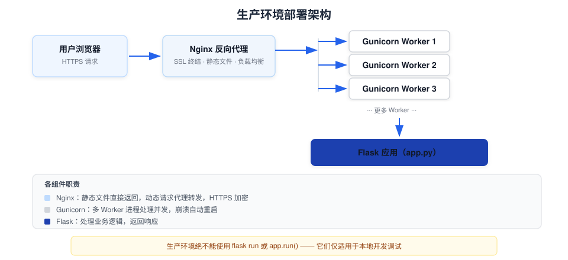

Flask デプロイ
開発が完了したら、Flask アプリケーションを本番環境にデプロイし、実際のユーザーがアクセスできるようにする必要があります。
この章では、開発から本番環境への移行における重要な手順と注意点を紹介します。
開発サーバー vs 本番サーバー
重要：Flask に組み込まれている開発サーバー（flask run）は開発環境専用です。本番環境に必要な安全性、安定性、パフォーマンスを備えていません。本番環境では、専門の WSGI サーバーを使用する必要があります。
| 特性 | Flask 開発サーバー | 本番 WSGI サーバー（Gunicorn/Waitress） |
|---|---|---|
| 並行処理 | シングルスレッド（デフォルト） | マルチプロセス/マルチスレッド/コルーチン |
| セキュリティ | Debug モードではブラウザでコードを実行可能 | デバッグ機能なし、安全で制御可能 |
| パフォーマンス | 最適化されていない | 高並行処理向けに最適化 |
| 適用シーン | ローカル開発、デバッグ | オンライン本番環境 |
デプロイチェックリスト
デプロイ前に、以下の項目がすべて完了していることを確認してください：
例
# ファイルパス：app.py（本番環境関連の設定確認）
import os
app.config.update(
# 1. Debug モードをオフにする（必須！）
DEBUG=False,
# 2. 環境変数からシークレットキーを読み取る（ハードコード禁止）
SECRET_KEY=os.environ.get("FLASK_SECRET_KEY", ""),
# 3. Session Cookie のセキュリティオプションを設定
SESSION_COOKIE_SECURE=True, # HTTPS 経由でのみ送信
SESSION_COOKIE_HTTPONLY=True, # JavaScript からのアクセスを禁止
SESSION_COOKIE_SAMESITE="Lax", # CSRF 攻撃を防止
)
import os
app.config.update(
# 1. Debug モードをオフにする（必須！）
DEBUG=False,
# 2. 環境変数からシークレットキーを読み取る（ハードコード禁止）
SECRET_KEY=os.environ.get("FLASK_SECRET_KEY", ""),
# 3. Session Cookie のセキュリティオプションを設定
SESSION_COOKIE_SECURE=True, # HTTPS 経由でのみ送信
SESSION_COOKIE_HTTPONLY=True, # JavaScript からのアクセスを禁止
SESSION_COOKIE_SAMESITE="Lax", # CSRF 攻撃を防止
)
完全なチェックリスト：
| チェック項目 | 説明 | リスクレベル |
|---|---|---|
| DEBUG = False | デバッグモードをオフにし、コードの漏洩を防ぐ | 重大 |
| SECRET_KEY をランダムかつ機密に保つ | Session と flash はキー署名に依存 | 重大 |
| SECRET_KEY を環境変数から読み取る | ハードコードせず、Git にコミットしない | 重大 |
| データベースのパスワードを環境変数から読み取る | 機密情報をコードに含めない | 重大 |
| SESSION_COOKIE_SECURE = True | HTTPS の場合のみ Cookie を送信 | 高 |
| エラーページでスタック情報を公開しない | カスタム errorhandler を使用 | 中 |
Waitress を使用したデプロイ（Windows/macOS/Linux）
Waitressは純粋な Python 製 WSGI サーバーで、クロスプラットフォーム対応、インストールも簡単です：
(.venv) $ pip install waitress
例
# ファイルパス：run.py（本番環境起動スクリプト）
from waitress import serve
from app import create_app
app = create_app()
if __name__ == "__main__":
# 本番サーバーを起動
serve(app, host="0.0.0.0", port=8000, threads=4)
# host="0.0.0.0" で外部からのアクセスを許可
# threads=4 で4つのスレッドを使用して並行リクエストを処理
from waitress import serve
from app import create_app
app = create_app()
if __name__ == "__main__":
# 本番サーバーを起動
serve(app, host="0.0.0.0", port=8000, threads=4)
# host="0.0.0.0" で外部からのアクセスを許可
# threads=4 で4つのスレッドを使用して並行リクエストを処理
起動：
(.venv) $ python run.py Serving on http://0.0.0.0:8000
Gunicorn を使用したデプロイ（Linux/macOS）
Gunicornは Linux 環境で最も人気のある Python WSGI サーバーで、優れたパフォーマンスを誇ります：
(.venv) $ pip install gunicorn
Gunicorn を起動（コマンドラインで直接アプリを指定）：
# 基本用法：4 个 worker 进程 $ gunicorn -w 4 -b 0.0.0.0:8000 "app:create_app()" # 参数说明： # -w 4 : 启动 4 个 worker 进程（通常设为 CPU 核心数 × 2 + 1） # -b 0.0.0.0:8000 : 监听所有网络接口的 8000 端口 # "app:create_app()" : 模块名:工厂函数（与 flask --app 语法相同）
Gunicorn のワーカータイプの選択：
| ワーカータイプ | 適用シーン | コマンド |
|---|---|---|
| sync（デフォルト） | CPU集約型、低並列処理 | gunicorn -w 4 app:app |
| gevent | IO 集約型、高並行・長時間接続 | gunicorn -k gevent -w 4 app:app |
| gthread | 中程度の並行処理、スレッドサポートが必要 | gunicorn --threads=2 -w 4 app:app |
Gunicorn は Windows をサポートしていません。Windows でデプロイする場合は、次を使用してくださいWaitress。
Nginx リバースプロキシを使用
本番環境では、通常 Nginx をリバースプロキシとして WSGI サーバーの前に配置します：
- Nginx は静的ファイル（CSS、JS、画像）を処理し、Python よりもはるかに効率的
- Nginx が HTTPS 終端（SSL 終端）を提供
- Nginx がロードバランシングを行い、リクエストを複数のバックエンドワーカーに分散

最小限の Nginx 設定例：
例
# ファイルパス：/etc/nginx/sites-available/runoob
server {
listen 80;
server_name runoob.com www.runoob.com;
# 静的ファイルは Nginx が直接処理
location /static/ {
alias /var/www/runoob/static/;
expires 30d; # ブラウザキャッシュ 30 日
}
# その他のリクエストは Gunicorn に転送
location / {
proxy_pass http://127.0.0.1:8000;
proxy_set_header Host $host;
proxy_set_header X-Real-IP $remote_addr;
proxy_set_header X-Forwarded-For $proxy_add_x_forwarded_for;
}
}
server {
listen 80;
server_name runoob.com www.runoob.com;
# 静的ファイルは Nginx が直接処理
location /static/ {
alias /var/www/runoob/static/;
expires 30d; # ブラウザキャッシュ 30 日
}
# その他のリクエストは Gunicorn に転送
location / {
proxy_pass http://127.0.0.1:8000;
proxy_set_header Host $host;
proxy_set_header X-Real-IP $remote_addr;
proxy_set_header X-Forwarded-For $proxy_add_x_forwarded_for;
}
}
設定を有効にして Nginx をリロード：
$ sudo ln -s /etc/nginx/sites-available/runoob /etc/nginx/sites-enabled/ $ sudo nginx -t # 检查配置语法 $ sudo systemctl reload nginx
systemd を使用したサービス管理（Linux）
systemd サービスファイルを作成し、Flask アプリケーションを起動時に自動開始し、クラッシュ後に自動再起動させます：
例
# ファイルパス：/etc/systemd/system/runoob.service
[Unit]
Description=RUNOOB Flask Application
After=network.target
[Service]
User=www-data
WorkingDirectory=/var/www/runoob
# 起動時に .env ファイルの環境変数を自動読み込み
EnvironmentFile=-/var/www/runoob/.env
# Gunicorn を使用してアプリを起動
ExecStart=/var/www/runoob/.venv/bin/gunicorn -w 4 -b 127.0.0.1:8000 "app:create_app()"
# クラッシュ後に自動再起動
Restart=always
RestartSec=5
[Install]
WantedBy=multi-user.target
[Unit]
Description=RUNOOB Flask Application
After=network.target
[Service]
User=www-data
WorkingDirectory=/var/www/runoob
# 起動時に .env ファイルの環境変数を自動読み込み
EnvironmentFile=-/var/www/runoob/.env
# Gunicorn を使用してアプリを起動
ExecStart=/var/www/runoob/.venv/bin/gunicorn -w 4 -b 127.0.0.1:8000 "app:create_app()"
# クラッシュ後に自動再起動
Restart=always
RestartSec=5
[Install]
WantedBy=multi-user.target
サービスの起動と管理：
$ sudo systemctl daemon-reload # 重载配置文件 $ sudo systemctl enable runoob # 设置开机自启 $ sudo systemctl start runoob # 启动服务 $ sudo systemctl status runoob # 查看服务状态 $ sudo journalctl -u runoob -f # 实时查看日志
WSGI サーバー早見表
| サーバー | プラットフォーム | 特徴 | インストール |
|---|---|---|---|
| Werkzeug（組み込み） | 全プラットフォーム | 開発専用、ホットリロードとデバッガーに対応 | Flask に同梱 |
| Waitress | 全プラットフォーム | 純 Python、Windows での第一選択 | pip install waitress |
| Gunicorn | Linux/macOS | パフォーマンス良好、Linux での第一選択、エコシステム成熟 | pip install gunicorn |
| uWSGI | Linux/macOS | 機能が豊富、設定がやや複雑 | pip install uwsgi |
チュートリアルのまとめ
Flask 入門チュートリアルの全内容を完了おめでとうございます！
学んだ知識を振り返りましょう：
| 章 | コアスキル |
|---|---|
| Flask を理解する | Flask の位置づけとエコシステムを理解 |
| 環境準備 | 仮想環境の作成、依存関係のインストール |
| 最初のアプリケーション | 最小アプリケーションの作成、flask run を使用 |
| ルーティングシステム | URL マッピング、変数ルール、url_for、HTTP メソッド |
| リクエストとレスポンス | リクエストデータの読み取り、さまざまなタイプのレスポンスを構築 |
| テンプレートレンダリング | Jinja2 構文、テンプレート継承、XSS 対策 |
| 静的ファイル | CSS/JS/画像などの静的リソースを管理 |
| Session と Cookie | ユーザー状態の保持、Flash メッセージ |
| 設定管理 | 複数環境の設定、環境変数の読み込み |
| Blueprint（ブループリント） | モジュール化されたコード構成、ファクトリーパターン |
| エラーハンドリング | カスタムエラーページ、ログ記録 |
| データベース統合 | SQLite 操作、g オブジェクトによる接続管理 |
| テスト | test_client、pytest でルートと API をテスト |
| デプロイ | Gunicorn/Waitress + Nginx + systemd |
継続学習のおすすめの方向性：
- Flask-SQLAlchemy：より強力なデータベース統合
- Flask-Login：ユーザー認証と権限管理
- Flask-WTF：フォーム処理と CSRF 保護
- Flask-Migrate：データベースマイグレーション管理
- Flask-RESTful 或 Flask-RESTX：RESTful API の構築
- Dockerコンテナ化デプロイで、移植性をさらに向上
クリックしてノートを共有
ノートは本記事の内容の拡張である必要があります！
記事投稿はこちらをクリック
登録招待コードの取得方法
ノートを共有する前にログインが必要です！
登録招待コードの取得方法